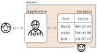
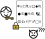
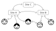

We’d like to work on a product that employs formal techniques to provide secure yet easy to deploy services. Through putting together a few tried and tested technologies, we can make robust and secure services easier to deploy. These technologies take a “secure-by-design” approach—security is achieved not by starting with an insecure design and then bolting on top mechanisms to keep out attackers, but rather they completely avoid insecurities. E.g. A bank vault is built without windows from the start, rather than installing security bars on windows. At the same time, existing security approaches may be used on top (e.g. operating within a VPN) allowing a defense-in-depth approach.
Anthropic claims that their Mythos model will greatly simplify and automate vulnerability scanning of internet-based services including finding previously unknown zero-day vulnerabilities. While these claims should be treated with a degree of skeptisism both in terms of cost and capabilities, the consensus is that there are no fundamental issues to the approach, this ability will likely be achieved in future iterations.
These capabilites will greatly reduce the costs of breaking into and hacking computer systems. Attacks that occur every now and again will become more prevalent. These include ransomware, stealing and exploiting confidential data, and denial of service attacks. Systems that previously got away by simply not being a priority to attackers now become vulnerable.
These attacks are not just a minor IT nuisance but rather of national importance. Consider state-actors that at times of peace collect and catalog vulnerabilities across systems that are individually seemingly unimportant—education records, healthcare data, traffic management, and exploit them as leverage during not-so-peaceful times.
Small- and medium-scale institutions struggle to manage their own IT infrastructure. When they outsource it to an outside firm it is difficult to evaluate and access the quality of their setup. For example, you may find out you cannot restore a backup only during a crisis.

In traditional services, data is stored in plain text on the server, and the application acts as a gatekeeper, allowing valid requests and denying unauthorized ones. However, if an unauthorized agent gains access to the server, they have free reign to view and modify the data.
In our model, access-controlled data is encrypted. This means that even if someone is able to break into the server there is little they can do with it. Authorized users, however, have a key to decrypt the data. This key is kept securely on their device, and unlocked using biometrics or a PIN. It never leaves the device.


Our model uses a distributed architecture. This has several advantages. For example, each server may keep a complete copy of the data, and so act as a backup. Restoring data from backups is no different from ordinary node-to-node synchronization, so is much less risky than in the traditional model. Multiple servers may also be used to help in load sharing or to improve geographical locality of data. Users may easily make changes offline and later synchronize with a server or even another user.
We employ a powerful cryptographic structure, called the Merkle tree, that ensures the correctness of our data and makes any tampering or unauthorized modifications obvious and traceble. This structure is the foundation of the Git VCS and blockchain-based systems.